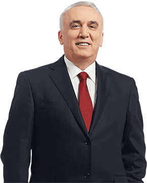

Ziraat Bank has set its sustainability priorities well aware of the responsibilities it bears with being "More Than a Bank." As part of its transformation process, the Bank continued to bolster its business process efficiency via a customer- and market-oriented approach in 2015.
Guided by its slogan "Together, to a Better Future," Zİraat Bank executes its transformation project with success.
Esteemed Ziraat Bank Stakeholders,
Ziraat Bank that has an extensive customer base: farmers in every corner of Turkey; companies that export products across the world to add value to the Turkish economy; students who represent Turkey's future; pensioners who previously provided valuable services to various industries for many years. The Bank is now executing its transformation initiative in line with the slogan "Together, to a Better Future" with tremendous success. Our stakeholders strongly support our myriad activities meant to leave a more habitable world to future generations, which further motivates Ziraat Bank employees in their sustainability efforts.
Transformation Centered on Sustainability
Ziraat Bank has set its sustainability priorities fully aware of the responsibilities associated with being "More Than a Bank." As part of its transformation process, the Bank continued to bolster its business process efficiency via a customer and market oriented approach in 2015. In order to sustain its unrivaled market position, Our Bank focuses on delivering a successful financial performance. In 2015, Our Bank boosted total assets by 22.31% over the prior year to TL 302,848 million and increased cash loans by 31.64% to TL 186,813 million. In parallel with its steadily rising business volume, Our Bank's taxes paid to the state's coffers have soared to TL 1,083.4 million. In pursuit of diversifying its product and services by adding value to customers' lives and increasing customer access to higher levels, Our Bank opened 112 branches in Turkey. As a result, Our Bank's network worldwide climbed to 1,812 locations,with 6,573 ATMs. Digital channels such as Internet Banking, Mobile Banking and the Call Center continued to deliver exceptional service to customers, our most valuable asset, by employing state-of-the-art IT practices.
Modern Banking Solutions for Agriculture
Ziraat Bank develops customized products and services for different customer segments in light of the latest developments and innovations in banking. Without compromising its founding mission, Ziraat Bank continued delivering strong support to the agriculture sector in 2015. Capitalizing on its deeply-rooted know-how in agricultural financing, Our Bank expanded its agriculture loan portfolio to TL 35.8 billion and grew its loan customer base to more than 634 thousand as of year-end 2015. Our Bank remained a major "solution partner" of all farmers across the country with its long-term loans at low interest rates.
TL 302.8
Billion
ZİRAAT BANK'S TOTAL ASSETS AMOUNTED TO TL 302.8 BILLION IN 2015.
Zİraat Bank makes a difference vis-a-vis rivals with the largest number of staff holding a Master's or PhD.
Standing by SMEs That Produce and Export
Ziraat credit union has forged new partnerships with KOSGEB and the Credit Guarantee Fund to further our country's sustainable development and extend funding to a wider customer base. To these ends, the Bank introduced new packages designed to meet SMEs' needs in 2015. Enjoying a strong reputation in the eyes of international fund providers, Our Bank continued to allocate loans to SMEs and other actors of the real economy.
"The School of the Turkish Banking Sector"
Ziraat Bank, which employed 25,697 personnel as of year-end 2015, makes a difference vis-a-vis its rivals with the largest number of staff holding a Master's degree or PhD. In addition to recruiting 3,486 employees in 2015 for its extensive service network located across Turkey, Our Bank continues to play a leading role in training the highly qualified employees demanded by the financial services industry thanks to a deeply-rooted corporate culture and its excellent Banking School.
Moving Forward to Achieve Environmental Sustainability
As a good corporate citizen, Ziraat Bank strives to minimize the environmental footprint of its operations. The Bank once again executed successful environmental sustainability efforts in the areas of carbon emission mitigation, energy efficiency and recycling in 2015. Our Bank minimizes its paper consumption via IT investments in line with its "Paperless Banking" approach and renovated 404 branches with a sustainability approach to reach international standards in energy efficiency and eco-friendly material use. Ziraat Towers, which is planned to rise in the İstanbul Finance Center, will also be constructed with eco-friendly technologies at world class environmental sustainability standards.
TL 35.8
Billion
IN 2015, ZİRAAT BANK INCREASED ITS TOTAL SUPPORT TO AGRICULTURAL PRODUCTION TO TL 35.8 BILLION.
Future Outlook
Successfully carrying out a radical transformation effort with the responsibility of being "More Than A Bank," Ziraat Bank moves forward with resolve towards its corporate goals and objectives. While targeting to take its leading position in the domestic market as well as rapidly growing overseas organization towards the future, Our Bank evaluates risks and opportunities effectively to create even more value for its stakeholders.
I would like to thank all of our stakeholders for their participation in our sustainability efforts, such as extending financing to the agricultural sector, providing support packages to SMEs, executing the paperless banking drive and mitigating carbon emissions. It is our sincere wish to produce and share ever more added value in the coming years.
Best regards,
Hüseyin AYDIN
Board Member & CEO